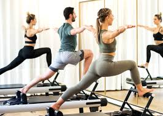
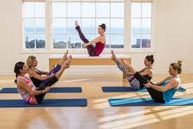

¿Qué es la disciplina Pilates y para qué sirve?
El Pilates es una disciplina que se basa en ejercicios que ayudan a mejorar la tonificación de los
músculos a
través de una sucesión de movimientos fluidos. Su esencia radica en la utilización del cerebro para el
control del cuerpo, fomentando el equilibrio.En general, los ejercicios de Pilates están destinados a
mejorar la función corporal en fases iniciales de tratamiento de una patología, en fases posteriores de
mantenimiento o mejora del estado físico, e incluso a nivel deportivo, previniendo lesiones y mejorando
del rendimiento. Además, es una de las herramientas con la que cuenta el fisioterapeuta para aplicar
ejercicio terapéutico en sus pacientes.
Pilates en camilla:
Propone una combinación de ejercicios que tiene como elemento principal la camilla en sí misma y
movimientos que apelan a la fuerza y elongación del cuerpo. La camilla permite entrenar el cuerpo
con un
abordaje integral pensando el organismo y la mente como un todo. Es un método ideal para tratar
rehabilitaciones de lesiones musculares, correcciones posturales y tonificaciones específicas.

Pilates Aereo:
El pilates aéreo es la versión, nunca mejor dicha, del pilates tradicional. Este se realiza en una
especie de columpio de tela que tiene dos brazos en los que agarrarse o apoyarse. Los agarres son
muy
parecidos a los del famoso TRX.

Taller instructor de pilates:
En este curso se formaran futuros profesionales para armar y dictar sesiones del método Pilates.
Aprenderán conocimientos y prácticas de los ejercicios de Pilates. Al finalizar este taller podrán
contar con las técnicas y destrezas necesarias desarrollarse profesionalmente.
